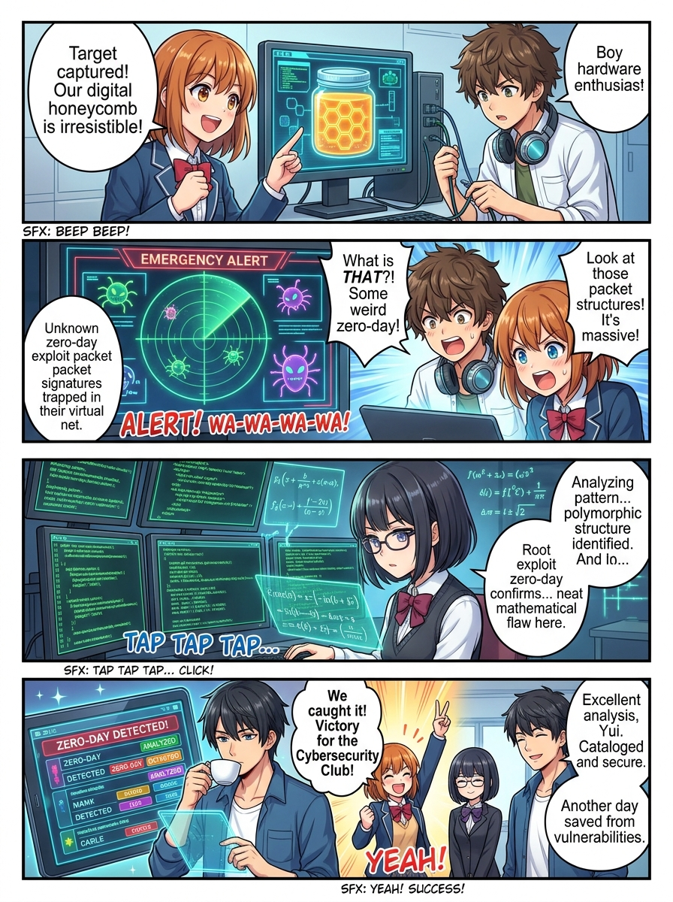
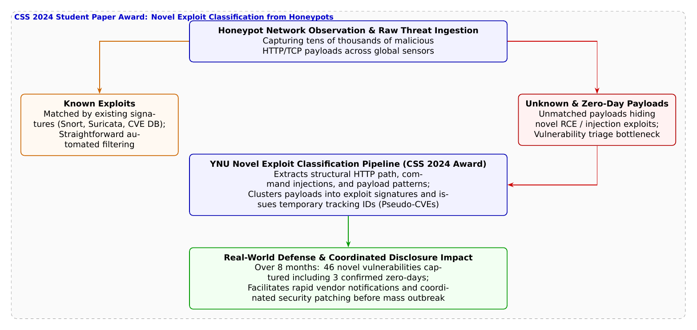

🎨 4コマ漫画挿絵（文字なし）
AI高解像度生成
▲ 【挿絵】青葉台高校 情報科学部＆帝都科学大学サイバーディフェンス・ラボでの実践シーン
💬 4コマ漫画キャラクターセリフ (Story Dialogue Script)
日・英バイリンガル (JA / EN)[悠真]「ああ。既知のシグネチャに引っかかる攻撃は自動で弾けるが、本当に危険なのは『既存ルールをすり抜ける未知の攻撃』なんだ」
[Yuma] "Exactly. Known attacks get filtered automatically, but the real threats are unknown payloads slipping through existing rules."
[結衣]「リクエストの構文木とペイロードの構造パターンを特徴量として抽出して、クラスタリングしてみましょう！」
[Yui] "Let's extract syntax trees and structural payload patterns as feature vectors to run clustering!"
[葵]「すごい！ 名前がつくことで、世界中の研究者が『あの攻撃だ！』って即座に追跡・共有できるんだね！」
[Aoi] "Incredible! By assigning temporary IDs, defenders worldwide can immediately track and share alerts!"
[結衣]「闇雲なパニックではなく、数理とシグネチャで脅威に名前を与える科学ですね！」
[Yui] "Not blind panic, but giving names to novel threats through math and structural signatures!"
📖 小説本文
冬の気配が忍び寄る11月の放課後、青葉台高校の情報科学部室。大型モニターには、世界地図を模したサイバー脅威マップが投影され、無数の光線が網の目のように交差していた。
「……毎分、約1万2000件のアクセス。その9割以上は、世界中に張り巡らされた『ハニーポット（おとりサーバー）』に吸い込まれた不正なプローブ通信です」
白石結衣がキーボードを叩きながら、集計グラフをウィンドウに表示させた。
「うへえ……！ まるで街中の街灯に群がる虫みたい。でも悠真先輩、これだけ大量の攻撃リクエストが届いていたら、どれが本当にヤバい攻撃なのか見分けるだけで日が暮れちゃいませんか？」
部長の橘葵が頭を抱える。ハニーポットとは、攻撃者をわざとおびき寄せるために無防備を装ってインターネット上に公開された観測用サーバーだ。攻撃者がどのような手口を使い、どのようなマルウェアを送り込んでくるのかを安全に記録・収集するための貴重な砦である。
「葵ちゃんの言う通りだ。既知の攻撃パターン――たとえば公開されたCVE（共通脆弱性識別子）に紐づくシグネチャがあるものは、SnortやSuricataのような検知エンジンが自動でラベルを貼って処理してくれる。だが、問題は『既存のルールに一切マッチしない未分類のペイロード』なんだよ」
大学の講義を終えて駆けつけた城崎悠真が、モニターの端に赤く点滅する未分類キューを指差した。
「未分類……つまり、世の中にまだ知られていないゼロデイ（0-day）攻撃かもしれないってことですか！？」
神崎蓮が身を乗り出した。ハードウェアや組み込み機器のファームウェア解析を得意とする蓮にとって、未知の脆弱性を突くエクスプロイト（攻撃実証コード）の存在は常に最大の関心事だった。
「その通りだ。毎日数千件単位で届く未知のペイロードの中から、単なる壊れた通信データやスキャンノイズを排除し、本当に新しい脆弱性を突いている攻撃だけを素早く見つけ出して優先度をつけること――これを『脆弱性トリアージ』と呼ぶ。だが、従来は熟練のセキュリティアナリストが手動でリクエストを目視解析していたため、膨大な時間がかかり、被害が拡大してからようやく気づくことも多かった」
「そこで登場するのが、横浜国立大学SPIRAL（吉岡克成教授、インミンパパ特任准教授、佐々木貴之准教授、九鬼琉氏ら）が発表し、情報処理学会CSS 2024で学生論文賞を受賞した『新規エクスプロイト自動分類手法』なんですね」
結衣が誇らしげに論文の概念図を開いた。
「この研究の画期的なところは、ハニーポットで捕らえたHTTPリクエストの構造――URLパスの階層、パラメータの渡し方、注入されたシェルコマンド（インジェクション構文）の文脈を正規化して構造的シグネチャを自動抽出し、クラスタリング（群分け）を行う点です」
「群分け……？ つまり、同じ脆弱性を狙っている仲間同士を、AIやアルゴリズムが自動でひとまとめにしてくれるってこと？」
葵が尋ねる。
「そうだ。さらに決定的に重要なのは、その新種クラスタに対して**『独自の仮識別子（Pseudo-CVE）』**をその場で発行し、即座に監視トラッキングを開始する仕組みを備えていることだ。公式なCVE番号が採番されるのには数日から数週間かかることもある。だが、仮識別子があれば『この仮IDの攻撃が昨日の3倍に急増している』『この機器の未公開エンドポイントを狙っている』と、即座に製品メーカー（ベンダー）へ協調的脆弱性開示（CVD: Coordinated Vulnerability Disclosure）を行える」
悠真の説明に、蓮が目を見張った。
「実際に、どれくらいの成果が出たんですか？」
「8ヶ月間の実環境観測において、**3件のゼロデイ攻撃を含む46件の新規エクスプロイト**を高精度に検出・分類したんだ。中には実際に製品開発ベンダーへ通報され、正式なパッチが配布されるきっかけになったものもある」
部室のモニター上で、先ほどまで「UNKNOWN」と表示されていた赤いログの塊が、綺麗なクラスタへと再編成され、緑色の追跡コードが付与されていく。
「獲物をおびき寄せるだけじゃなく、その手口を科学的に解明して、全世界の盾に変える……。おとりサーバーって、ただの罠じゃなくて、インターネットの最前線にある気象観測所なんだね！」
葵の言葉に、悠真と結衣、そして蓮が力強く頷いた。冷え込む夕暮れの部室で、若きディフェンダーたちの瞳には、世界を陰から支える先端サイバー科学の確かな光が宿っていた。
---
📊 セキュリティ構造図解 (TikZ LuaLaTeX生成)
国家安全基準・工学図解
▲ 【技術構造図】IPAデジタルスキル標準・国際規格に準拠した仕組みのモデル化